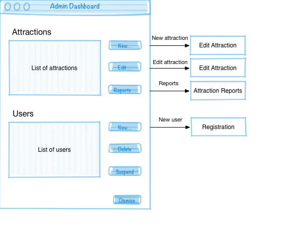
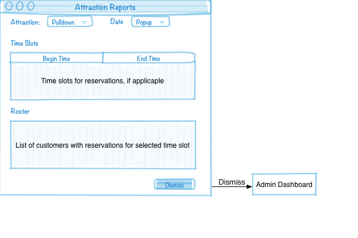

Trip Planner
You will create a database for an application that allows users to explore the attractions in a given city and create a trip plan that lists all the attractions they will see during a trip to that city. The general description below describes the data your database will need to maintain and the constraints your database must enforce, in some cases with application code.
General Description
A user account is required to access the trip planning system, so the database must maintain user account information such as a user's name and email address. Some users will have administrative rights to the system in order to add attractions, update attraction information, and get reports of an attraction's rosters and schedules. An admin user will also have the ability to add and delete user accounts and place user accounts on hold if abuse is detected (see section on reviews below).
An Attraction is some place that a visitor would want to visit. An attraction could be a tour, a monument, a public park to hang out in, or any other place of note in a city. Some attractions have a fee, and some are free. Some attractions require reservations for a particular time slot and have bounded durations. At a minimum the database will need to maintain attractions' names, addresses, descriptions, hours of operations, and nearest public transportation so that users (or the trip planning system) can plan trips appropriately. Attractions that require reseravations or have times slots and bounded durations will need to keep track of the data necessary for planning them, including the number of spaces available for each time slot.
A trip is a list of activities in a city. A user plans a trip to a city by selecting attractions for each day of their visit and adding these to their trip as activities. An activity is a visitor's visit to an attraction on a trip. Where appropriate, a trip's activities will include reservations for attractions that require them. Reservations will include the attraction, date, start time and end time, and a reservation number. The system should ensure that activities do no overlap, and may enforce a travel time gap between activities to ensure that users can make it from one activity to the next.
Once a user has completed a trip plan, the user can purchase reservations included in the trip. The system should collect and store credit card information from the user, using one of the user's addresses as the billing address. At time of purchase the system should ensure that space is still available for each activity in the user's trip. Once the purchase is completed, spaces for the apporpriate time slots for those attractions should be updated. If a time slot at an attraction becomes sold out before a user completes their purchase of a trip itinerary, the system should remove that activity from the user's trip, exit the trip purchasing process, and allow the user to update their trip plan.
Once a user has completed a trip, which the system knows simply by the fact that the end date of the trip has passed, the user can create a review for attractions included in the completed trip. The system should ensure that users can only add reviews for attractions that were included on trips that they completed.
User Interface (UI) Mock-up
Following is a list of mockups of the screens that make up the database application (the user documents, using terminology from our conceptual design process), with UI flow arrows and textual descriptions. You can derive an EER diagram, semantic constraints, information flow diagram, relational model, SQL statements, and the application itself from these mock-ups and descriptions. Please note that these are low-fidelity mock-ups. Your UI will likely (and probably should) look different.
Login

|
A user account is required to access the system, so the database must maintain user account information such as a user's name and email address. Some users will have administrative rights to the system in order to add and edit attraction information, and get reservation lists. Administrators are added only by database administrators. so there is no application screen for adding or editing administrators. |
Registration

|
Items marked with a * are required. Email is unique. Credit card is unique. |
Admin Dashboard
|  | An admin can add attractions, update attraction information, and get reports of an attraction’s rosters and schedules. An admin user will also have the ability to add and delete user accounts and place user accounts on hold if abuse is detected. |
Edit Attraction

|
An Attraction is some place that a visitor would want to visit. An attraction could be a tour, a monument, a public park to hang out in, or any other place of note in a city. Some attractions have a fee, and some are free. Some attractions require reservations for a particular time slot. At a minimum the database will need to maintain attractions' names, addresses, descriptions, hours of operations, and nearest public transportation so that users (or the trip planning system) can plan trips appropriately. Attractions that require reseravations for times slots will need to keep track of the data necessary for planning them and keep track of the reservations in the system so that the system knows the number of spaces available for each time slot. |
Attraction Reports
|  | Attraction dropdown only shows attractions that have time slot reservations. Select an attraction and a date, and the time slots for which there are reservations in the system are disiplayed in the time slots list. Select a time slot and the roster of customers with reservations for that time slot are diplateyed. |
Customer Dashboard

|
Main screen for a customer showing profile information and trips in the system. |
Edit Trip

|
Pick a city and a date, and all the attractions for that city with availability on that date (if applicable) are displayed. Pick an attraction, and all the time slots for reservations (if applicable) are displayed. Pick an attraction and time slot (if applicable) and press Add to Trip, and the attraction is added to the trip itinerary. If the selected time slot overlaps with a time slot already in the trip, a pop-up screen informs the user and the attraction is not added to the trip. When book/confirm is pressed, if any of the reservation time slots are no longer available, a message box informs the user of the attraction and time slot that was not available, and the user is returned to the edit trip screen with the attraction removed. |
Review Attraction

|
The city pull-down is populated with cities in which the user has completed trips. Once a city is selected the attractions list is populated with attractions the user has visited (were on a trip whose end date has passed). |
Phase 2 Requirements
Map the EER model you created in Phase 1 to a relational model. Encode the model in SQL in a file called teamN-schema.sql. Add constraints, such as NOT NULL constraints and foreign key constraints, and appropriate data types.
teamN-schema.sql, where N is your team number, should contain valid SQL code to create an empty database with all of the necessary tables for your trip planner application.
You may use your (corrected) EER model from Phase 1, or this sample solution:
Phase 3 Requirements
Turn in two SQL files: teamN-data.sql and teamN-queries.sql.
teamN-data.sql, where N is your team number, should contain valid SQL code to insert data into your database tables for at least 3 attractions in each of 3 cities, including Metz, Paris, and one or more cities of your choosing. There should be data for each field for each row in each table, including the descriptions of the attractions (the descriptions should be correct, but don't have to be longer than two sentences). In addition, include insert statements to create a trip in Paris on Saturday, 28 July 2018 with at leat 3 activities, at least one of which requires a reservation and at least two of which requires payment (they can be the same activity).
teamN-queries.sql, where N is your team number, should contain valid SQL code for queries that answer the following questions:
- Given a username or email address, is that user in the database?
- Given a username or email address, is that user an admin user?
- Which attractions are open right now in Paris?
- Which attractions in Paris don't require reservations?
- Which attractions in Metz are free?
- Show the details for one attraction?
- List all the reviews for an attraction.
- List all the reviews written by a particular user.
- Show the details of one review.
- List the trips in the database for a particular user.
- For an attraction that requires reservations and already has some reservations for a time slot, how many spots remain for that time slot?
- For one of the trips in the database that has two more more paid activities, what is the total cost of the trip?
- For one of the public transportation locations in your database, which attractions are nearest to that location (list it as the nearest public transportation)?